At a Glance
Our EDA revealed that no single demographic feature explains electoral volatility. So we attacked the problem from three directions: supervised classification to predict volatility quintiles, regression to quantify continuous volatility scores, and unsupervised clustering to discover natural county archetypes from demographics alone. K-Means (k=5) revealed five distinct profiles, from aging rural communities to high-diversity urban centers, and one cluster turned out to be exclusively North Carolina counties with extreme volatility. We reference these archetypes throughout this analysis to ground the models in recognizable county types.
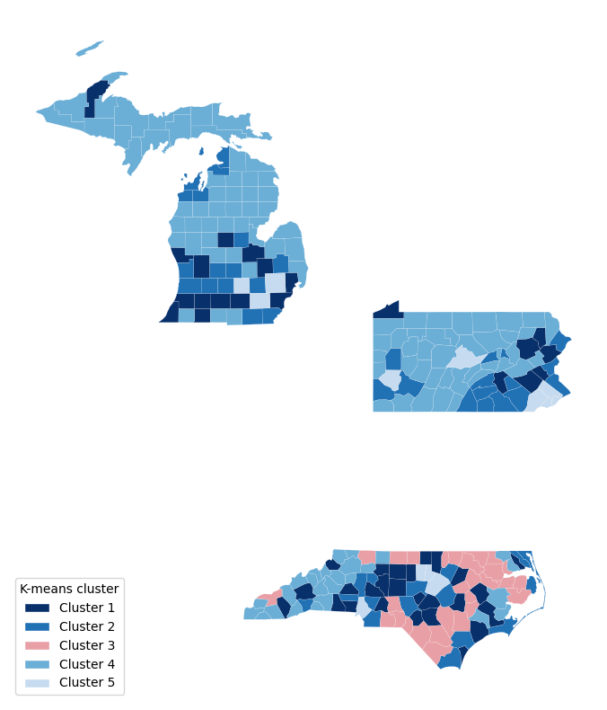
| Archetype | Counties | Key Traits | Avg Volatility |
|---|---|---|---|
| Suburban Middle (Cluster 1) | 47 | Mid-size (~241k pop), moderate diversity, avg income $66k | Average |
| Affluent Exurban (Cluster 2) | 47 | High income ($83k), 79% homeownership, low density | Low |
| High-Poverty Rural (Cluster 3) | 28 | 35% Black, 21% poverty, small/rural (38k pop), NC only | Highest (Q5 avg: 4.6) |
| Aging Rural (Cluster 4) | 115 | Oldest (median age 47), very homogeneous, <1% foreign-born | Lowest |
| High-Diversity Urban (Cluster 5) | 13 | Largest (748k pop), most diverse, 50% bachelor’s+ | Moderate-High |
Volatility was measured per cluster by cross-referencing each county’s K-Means cluster assignment with its volatility quintile (Q1–Q5). The “Q5 avg: 4.6” for Cluster 3 means that on a 1–5 scale, these counties average 4.6, with 22 of 28 falling in the highest volatility class (Q5).
The Modeling Challenge
We measure electoral volatility as how much a county’s partisan balance shifts between elections, not simply who wins. Our composite volatility score (vol_z_abs_sum) captures the absolute z-scored margin swings across 2016–2020–2024. We then binned all 250 counties into five equal quintiles, from Q1 (Very Stable) through Q5 (Highly Volatile), giving us a balanced 5-class target with exactly 50 counties per class.
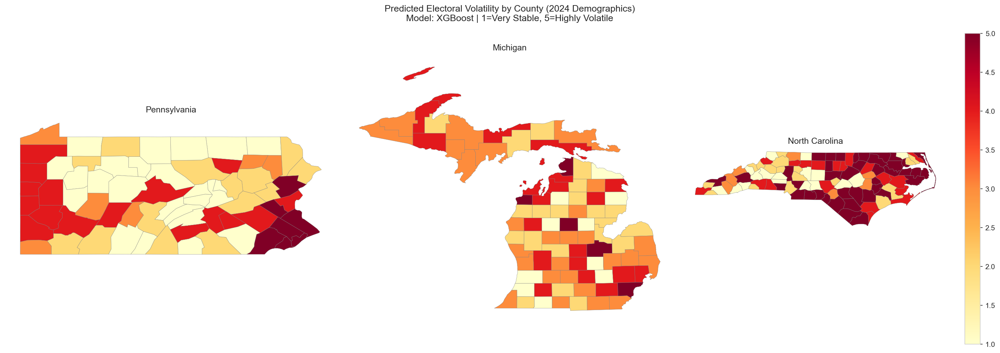
Two Complementary Lenses
We approached prediction from two angles. Classification asks: "which volatility bucket does this county belong to?" This is useful for campaign triage when you need a quick stable-vs-volatile label. Regression predicts the continuous volatility score directly, answering "exactly how volatile is this county?" This is valuable for ranking counties within the same class and quantifying the magnitude of expected swing.
Classification Pipeline
All classification models were evaluated with nested cross-validation: an outer 5-fold loop for unbiased performance estimation, and an inner 3-fold loop for hyperparameter tuning. This prevents information leakage and gives honest estimates of how each model would perform on truly unseen counties.
The Regression Track: Multiple Linear Regression
Our regression approach used Multiple Linear Regression (OLS) with both forward and backward stepwise feature selection, scored by R² and MAE. From the full set of 28 standardized features, the model selected 8 predictors that best explain continuous volatility. The overall pooled model achieved an R² of 0.411 on training data and 0.236 on the test set (RMSE = 1.122), explaining roughly 41% of the variance in county-level volatility scores.
| Model Scope | R² | Key Selected Features | Top Predictor |
|---|---|---|---|
| Pooled (All States) | 0.411 | 8 features incl. rent, age, poverty, entropy | Median Gross Rent (β = 0.879) |
| Pennsylvania | 0.674 | Median Age, Unemployment, Racial Diversity, Rent | Racial Diversity Index |
| Michigan | 0.331 | % Bachelor’s Degree+, % Carpool | % Bachelor’s Degree+ |
| North Carolina | 0.435 | % Black, % Hispanic, % Below Poverty, Rent, % Carpool | % Below Poverty Line |
A striking finding: the pooled model’s strongest coefficient belongs to Median Gross Rent (β = 0.879), a housing cost variable that captures the intersection of urbanization, economic pressure, and demographic transition. This is the only feature that generalizes across all three states in both the classification and regression pipelines, suggesting that housing affordability stress may be a universal undercurrent of electoral instability.
Pennsylvania stands out with R² = 0.674, meaning demographics explain nearly two-thirds of PA’s volatility variance. That is far more than Michigan (0.331) or North Carolina (0.435). This suggests PA’s electoral instability is more structurally "readable" from census data alone, while Michigan’s volatility depends on harder-to-measure factors like local political organizing and candidate-specific effects.
The Classification Arena
Three classifiers competed on the 5-class volatility prediction task. We started with Random Forest as our baseline, then tested whether gradient boosting (XGBoost) or maximum-margin (SVM) approaches could improve on it.
Baseline Random Forest
An ensemble of 300 decision trees with balanced class weights. Random Forest handles nonlinear feature interactions naturally and provides built-in feature importance. With an accuracy of 36.8% and macro F1 of 0.362, it established our baseline. That is significantly above the 20% random-chance threshold for 5 balanced classes, though it clearly struggled with the middle quintiles.
Cluster insight: RF performed best on Q5 (Highly Volatile) counties, which are dominated by High-Poverty Rural (Cluster 3) communities. Their extreme demographic profile makes them the most distinctive signal in the data.
Best 5-Class XGBoost
Gradient boosting with 100 randomized hyperparameter configurations. XGBoost earned the highest 5-class accuracy (38.8%) and macro F1 (0.387), a meaningful improvement in a 5-class setting. Its key advantage was better calibration on the middle quintiles (Q3: 0.356 F1 vs. RF’s 0.257), suggesting it captures subtler demographic gradients that tree ensembles miss.
Contender SVM (Linear Kernel)
Support Vector Machine with a linear kernel and balanced class weights. Matched RF’s overall accuracy (36.8%) but showed a different error pattern: it achieved the strongest Q2 (Stable) performance of any model (F1 = 0.365), suggesting that the hyperplane-based approach finds a linear boundary for “low-volatility” counties that tree methods struggle with. We also tested an RBF kernel, which traded accuracy (35.2%) for higher ROC-AUC (0.790), indicating better probability calibration despite worse hard predictions.
Confusion Matrix Comparison
Click each tab to compare how the three models distribute their predictions across the five volatility classes. Diagonal cells (correct predictions) are highlighted in green; off-diagonal errors in red shading.
| Actual \ Pred | Q1 | Q2 | Q3 | Q4 | Q5 |
|---|---|---|---|---|---|
| Q1 Very Stable | 25 | 8 | 10 | 4 | 3 |
| Q2 Stable | 17 | 8 | 13 | 8 | 4 |
| Q3 Moderate | 11 | 15 | 13 | 8 | 3 |
| Q4 Volatile | 4 | 6 | 10 | 17 | 13 |
| Q5 Highly Volatile | 2 | 3 | 5 | 11 | 29 |
| Actual \ Pred | Q1 | Q2 | Q3 | Q4 | Q5 |
|---|---|---|---|---|---|
| Q1 Very Stable | 21 | 14 | 5 | 8 | 2 |
| Q2 Stable | 14 | 11 | 10 | 10 | 5 |
| Q3 Moderate | 6 | 14 | 16 | 11 | 3 |
| Q4 Volatile | 5 | 8 | 6 | 19 | 12 |
| Q5 Highly Volatile | 5 | 5 | 3 | 7 | 30 |
| Actual \ Pred | Q1 | Q2 | Q3 | Q4 | Q5 |
|---|---|---|---|---|---|
| Q1 Very Stable | 26 | 6 | 10 | 6 | 2 |
| Q2 Stable | 12 | 19 | 10 | 2 | 7 |
| Q3 Moderate | 11 | 13 | 9 | 11 | 6 |
| Q4 Volatile | 9 | 8 | 9 | 16 | 8 |
| Q5 Highly Volatile | 6 | 8 | 6 | 8 | 22 |
5-Class Model Scoreboard
| Model | Accuracy | Macro F1 | ROC-AUC | Best Per-Class F1 |
|---|---|---|---|---|
| Random Forest | 0.368 | 0.362 | 0.803 | Q5: 0.569 |
| XGBoost | 0.388 | 0.387 | 0.783 | Q5: 0.588 |
| SVM (Linear) | 0.368 | 0.364 | 0.765 | Q2: 0.365 |
A clear pattern emerges: all three models excel at the extremes (Q1 and Q5) but struggle with the middle quintiles. The confusion matrices show a "smearing" effect where Q2–Q4 counties bleed into adjacent classes. This reflects genuine demographic overlap between moderate-volatility counties rather than a modeling shortcoming. The extremes are simply where demographics tell the clearest story.
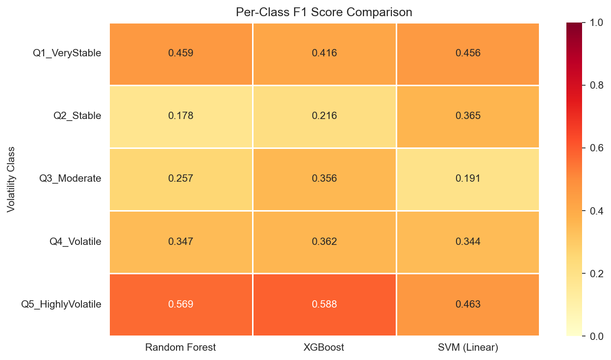
The Binary Breakthrough
The 5-class struggle pointed to a pragmatic question: does a campaign manager really need to distinguish Q2 from Q3? What matters is identifying high-volatility targets (Q4 + Q5) versus stable counties (Q1–Q3). This binary reframing changed everything.
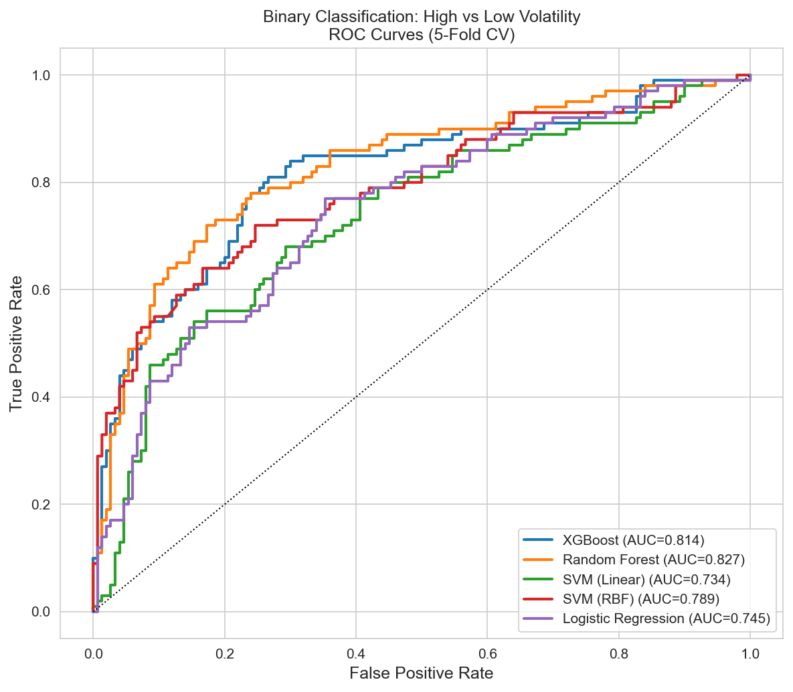
| Model | Accuracy | F1 | Precision | Recall | ROC-AUC |
|---|---|---|---|---|---|
| Random Forest | 0.772 | 0.718 | 0.726 | 0.690 | 0.828 |
| XGBoost | 0.748 | 0.660 | 0.718 | 0.610 | 0.814 |
| SVM (RBF) | 0.756 | 0.674 | 0.724 | 0.630 | 0.789 |
| Logistic Regression | 0.680 | 0.604 | 0.598 | 0.610 | 0.745 |
Aging Rural (Cluster 4) = Predictably Stable
These 115 homogeneous, older counties, spread across all three states (50 MI, 39 PA, 26 NC), were almost perfectly classified as low-volatility. Median age 47, under 1% foreign-born, and the highest homeownership rate of any cluster (79%). Their demographics tell a consistent story of partisan anchoring.
High-Poverty Rural (Cluster 3) = Volatile Signal
With 22 of 28 counties rated Highly Volatile (Q5) and an average quintile of 4.6, this cluster is the single clearest volatility signal in our dataset. Every county in this cluster is in North Carolina, concentrated in the eastern part of the state along the historic Black Belt.
Inside Cluster 3: North Carolina’s Volatility Engine
One of our most revealing discoveries is that Cluster 3 (High-Poverty Rural) is entirely composed of North Carolina counties, all 28 of them. No Pennsylvania or Michigan county shares this demographic profile. This geographic exclusivity explains a lot. It is why our cross-state models struggle, and why NC’s volatility responds to different levers than the other two states.
These counties sit at the intersection of every high-volatility signal in our data: racial diversity (avg 35% Black population), deep poverty (21% below poverty line), low education (only 17% with a bachelor’s degree), and small populations (avg 38k). The flagship example is Robeson County, the single most volatile county in our entire 250-county dataset (volatility score of 8.03). Robeson has the highest racial entropy score in the study, the lowest education level, and a poverty rate over 3 standard deviations above the mean. Unlike suburban counties where demographic shifts gradually reshape voting patterns, Robeson’s longstanding structural inequality keeps the electorate in constant flux.
The fact that K-Means, with no knowledge of election results or state boundaries, isolated these 28 counties into a single cluster using demographics alone validates the connection between socioeconomic structure and electoral instability. The algorithm found the volatility engine before we told it to look for one.
The Misfit Detector
We also applied logistic regression in a creative way. Instead of predicting volatility, we trained a model to predict partisan lean from demographics alone. The key insight is that counties where the model confidently predicts "blue" but voters choose "red" (or vice versa) represent demographic misfits, places where the electorate defies its demographic expectations. We hypothesized that this tension would correlate with volatility, and it does.
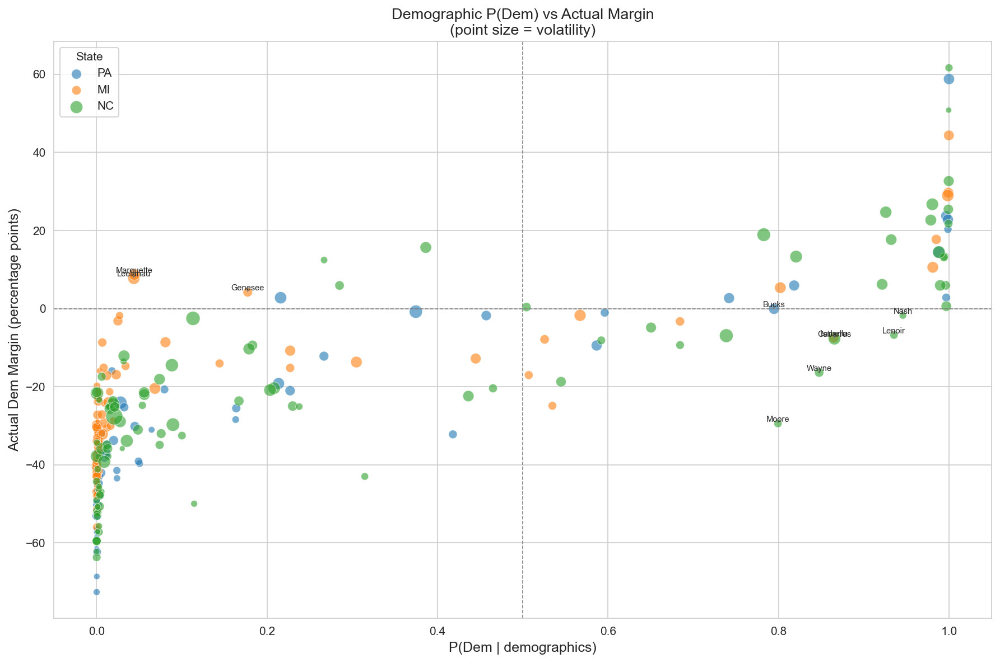
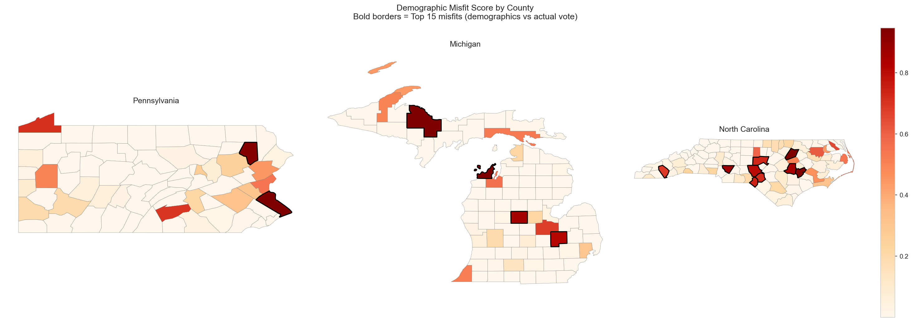
“Surprise Dem” Misfits
Counties whose demographics say "Republican" but that vote Democratic tend to be university towns and resort communities with unique electorates, such as Marquette County, MI and Centre County, PA.
“Surprise Rep” Misfits
Southern counties with mixed demographic profiles that nonetheless lean Republican. The demographic tension in these communities maps directly to higher electoral volatility.
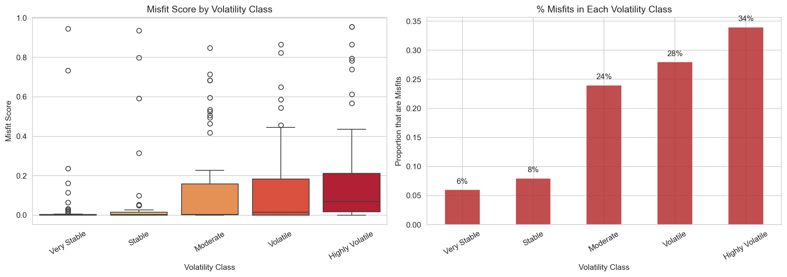
The misfit detector gives us something no standard classifier can: a measure of how surprising a county’s voting behavior is given its demographics. Counties with high misfit scores are exactly the places where campaigns should pay closest attention, because they are the ones most likely to flip.
Cross-State Strategic Insight
A natural question: can a model trained on Pennsylvania and Michigan predict volatility in North Carolina? We tested this with Leave-One-State-Out (LOSO) cross-validation, where each state is held out in turn. The answer was revealing, not because the models worked, but because of how they failed.
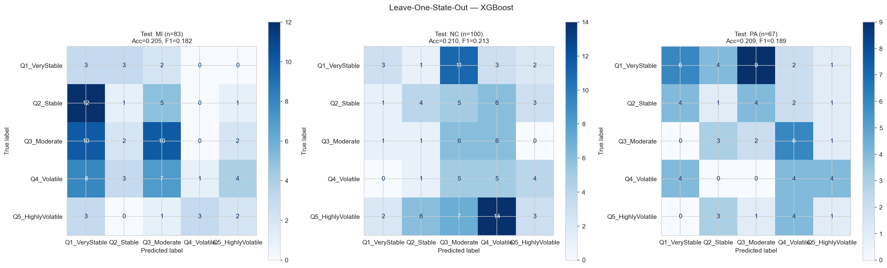
| Held-Out State | Counties | 5-Class F1 | Binary F1 | Binary AUC |
|---|---|---|---|---|
| Pennsylvania | 67 | 0.189 | 0.591 | 0.838 |
| Michigan | 83 | 0.182 | 0.636 | 0.778 |
| North Carolina | 100 | 0.213 | 0.736 | 0.829 |
| Full Dataset (Pooled) | 250 | 0.387 | 0.718 | 0.828 |
The performance gap is striking: pooled 5-class F1 of 0.387 drops to an average of just 0.195 under LOSO. Rather than exposing a weakness, this result reveals something more interesting. Each state’s volatility is driven by a unique demographic fingerprint.
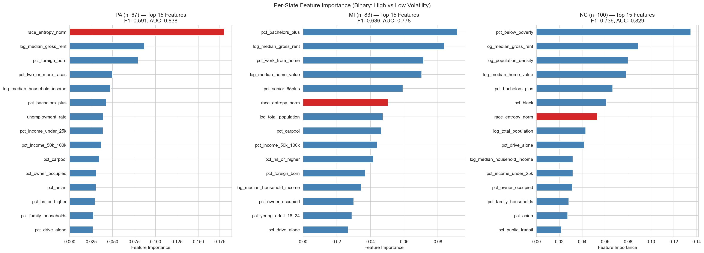
Diversity-Driven Volatility
Racial entropy is the dominant predictor. PA’s volatile counties sit along the suburban diversity frontier between homogeneous rural areas and multicultural cities.
Education-Driven Volatility
Bachelor’s degree attainment is Michigan’s key signal. The college-educated suburban swing, especially around Detroit and Grand Rapids, defines MI volatility.
Poverty-Driven Volatility
Economic distress dominates. NC’s most volatile counties are the High-Poverty Rural (Cluster 3) communities concentrated in the eastern part of the state.
The Power of State-Specific Models
While our pooled model captures broad national patterns, state-level models unlock a deeper layer of precision. By tailoring features to each state’s unique electorate, we can build sharper predictions and more targeted campaign strategies.
Cross-Method Convergence: Classification Meets Regression
The most compelling validation of these state-specific findings comes from an unexpected place: our regression models, developed independently from the classification pipeline, converge on the same top predictors per state. Classification uses SHAP feature importance from XGBoost; regression uses stepwise feature selection with R² scoring. Two completely different methods, same answer.
| State | Classification Top Feature (SHAP) | Regression Top Feature (Stepwise) | Agreement? |
|---|---|---|---|
| Pennsylvania | Racial Diversity Index | Racial Diversity Index | ✓ Match |
| Michigan | % with Bachelor’s Degree+ | % with Bachelor’s Degree+ | ✓ Match |
| North Carolina | % Below Poverty Line | % Below Poverty Line | ✓ Match |
This three-for-three convergence is striking. When a nonlinear tree ensemble (XGBoost) and a linear model (OLS) independently surface the same dominant feature for each state, the signal is robust and not an artifact of a single modeling choice. Pennsylvania’s volatility genuinely hinges on racial diversity, Michigan’s on education levels, and North Carolina’s on poverty rates.
One feature bridges all three states across both methods: Median Gross Rent. It appears in the pooled regression as the single strongest coefficient (β = 0.879) and consistently ranks among the top SHAP features nationally. Housing cost encodes a unique combination of urbanization pressure, economic vulnerability, and demographic change, making it the closest thing to a universal volatility signal in our data.
The Diversity Threshold
We used SHAP (SHapley Additive exPlanations) to understand which features drive our XGBoost model’s predictions. One result stood out clearly. The normalized racial entropy index, introduced on our EDA page as Shannon Entropy, emerged as the single most important predictor of electoral volatility.
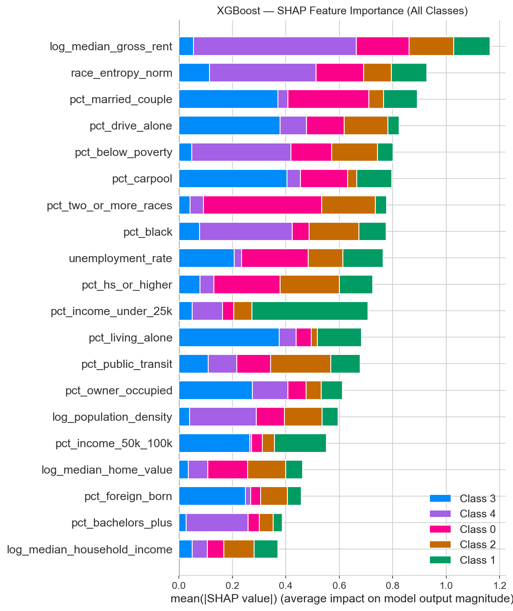
Our Racial Diversity Index (based on Shannon Entropy) measures how evenly distributed a county’s population is across racial groups, on a 0–1 scale. At a score of 0.552, we found a clear tipping point. Counties below this level show little connection between diversity and volatility. But once a county crosses 0.552, its odds of being classified as high-volatility jump by a factor of 7.15. In practical terms, a county with a moderately mixed population is far more likely to swing than either a very homogeneous or a very diverse one.
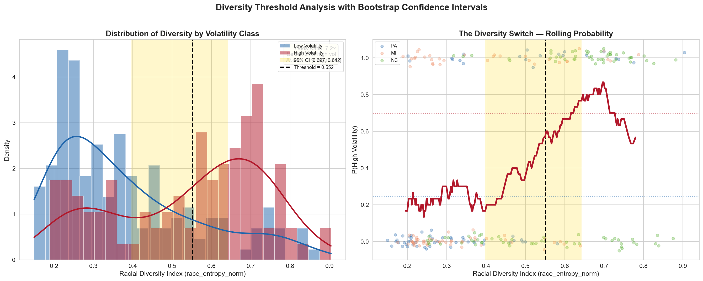
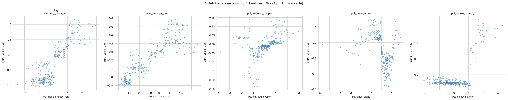
Diversity Meets Poverty
The threshold effect intensifies when diversity intersects with economic distress. High-diversity and high-poverty counties, dominated by the High-Poverty Rural (Cluster 3) archetype, show the strongest volatility signal in the entire dataset. This is exactly the profile of those 28 North Carolina counties: their average racial entropy sits well above the 0.552 threshold, and their poverty rates are the highest of any cluster. When both conditions are present together, volatility rises significantly more than either factor alone would predict.
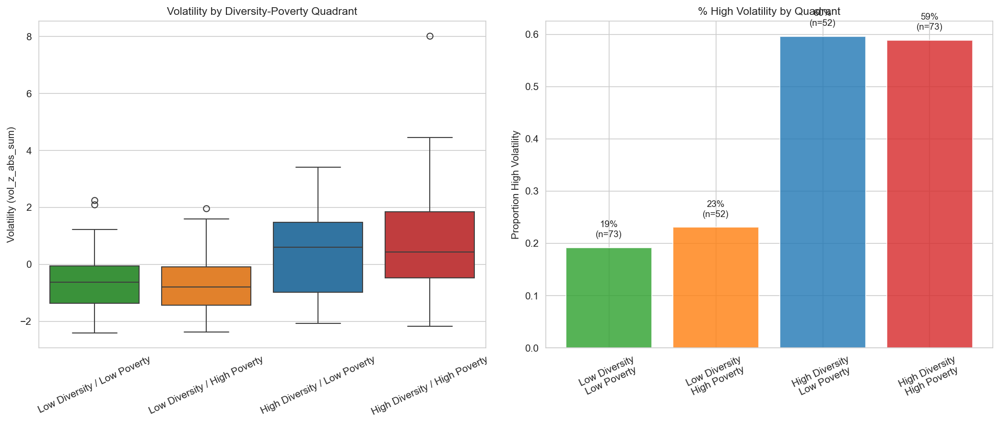
Composite Index > Individual Demographics
Our proposal hypothesized that a composite Racial Diversity Index would outperform any single demographic variable. SHAP confirms it: race_entropy_norm has higher feature importance than pct_black, pct_hispanic, or any other individual race variable.
Feature Combinations That Matter
The three strongest SHAP interactions: (1) racial entropy × population density, (2) bachelor’s degree % × racial entropy, and (3) total population × population density. Diversity is in two of the top three.
Coming Next: Results
Our methods revealed five county archetypes, a 7.15× diversity threshold, and state-specific volatility fingerprints. But what does this mean for real-world strategy? The Results page will answer our original research questions with data.
Priority County Rankings
Which of the 250 counties should campaigns target first for maximum impact?
Research Question 1Hypothesis Testing
Do wealth, diversity, and amplification hypotheses hold up against the full evidence?
Hypotheses 1–3State-by-State Strategy
Tailored recommendations for PA, MI, and NC based on each state’s unique volatility drivers.
Research Questions 7–8Temporal Consistency
Does the swing map shift between 2016, 2020, and 2024, or do the same counties keep swinging?
Research Question 8